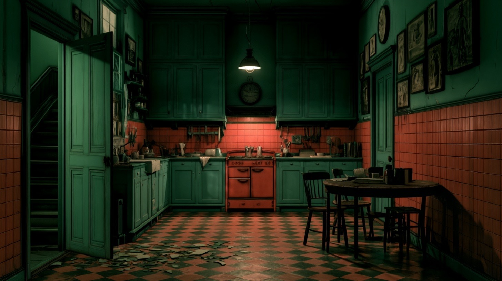

The Dinner Party
Welcome
Front door
Living room
Hallway
Kitchen
Staircase
Upstairs hallway
Bedroom
Kitchen
Whoever was here is gone.

The kitchen is quiet.
Step into the kitchen
Walk across the kitchen
Go to the staircase